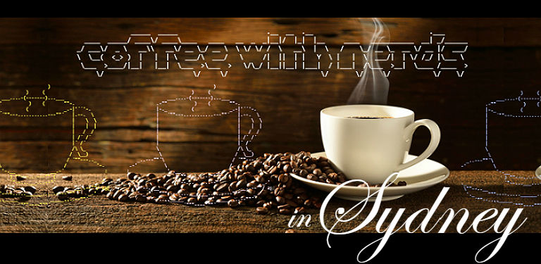

About
"Because nerding shouldn't have to be lonely."
- Matthew T. Villwock
Welcome nerds! Coffee with Nerds is a group for people that need/want to sit in front of their computer to geek out about something, and would like to do so in the company of fellow nerds!
Here are the deets:
- Where: Cafe 107, 107 Redfern Street, Redfern
- When: 1st and 3rd Saturday of every month, 12 - 6pm (come for some or all)
It's great if you've got a project that hasn't been getting the attention it deserves, or maybe a new technology you're learning for work but keep putting off for another day. Whatever it is, this is a great way to incentivise yourself and have a little fun while doing so :)
Hope to see you there!